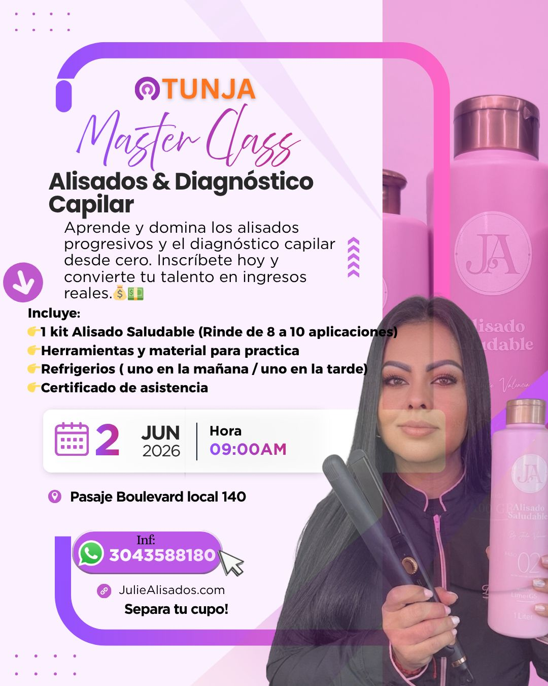

Tu liso perfecto te espera sin excusas
Financia tu compra a cuotas con Addi o Tarjeta de Crédito.


Lo que dicen nuestras clientas
Nada nos hace más felices que verlas sonreír. Estas son algunas de las historias reales de nuestras clientas.
"Quiero compartir mi experiencia con Julie Alisados, quien es una profesional increíble y una verdadera artista en el cuidado y transformación del cabello... Su pasión y compromiso se nota en cada detalle. La recomiendo con total seguridad."
"Los alisados de Julie son espectaculares, de verdad te dejan el pelo súper sano y brilloso. Los productos son increíbles, te mejoran el pelo al 100%. Recomiendo mucho Julie Alisados."
"El mejor alisado del mundo, tu cabello queda 100% liso, los productos de post cuidado te garantizan el cabello saludable y bello por meses. Ame la experiencia."
"Ame el resultado desde el día número 1 mi hija también tenía el cabello maltratado mucho friz pero gracias a ella lo recuperamos hoy nos cuidamos el cabello con sus productos y amamos el resultado."
"Julie muchas gracias! Me encantó lo perfeccionista que fuiste con mi cabello 🥹 y lo paciente. Tus productos me sirvieron mucho con el tratamiento, espero que vuelvas pronto para mi retoque."
"Todo sobre julie Alisados es lo que está bien, la atención es excelente, trataron mi cabello como si fuera el suyo, un trabajo muy dedicado y hecho con amor. amé mi cabello 😭"
"Desde que le realice el primer alisado mi cabello empezó a crecer con más vida más sedoso, se ve brillante, me encanto 😍"
"Me gusto mucho mi alisado saludable, el cabello me quedó sedoso y brillante, además del buen servicio y la atención especial que me ofrecieron. Me encantó."
"Estaba cansada de tanto friss en mi cabello no pude tomar mejor elección que visitar a juli alisados y dejar que me consintieran lo recomiendo con un rotundo siii 🫶🏻💜💜"
"La RCP hizo literalmente un milagro en mi cabello y los productos son espectaculares, gracias Julie eres excelente en lo qué haces! Superó mis expectativas."
Nuestros Servicios Exclusivos

Alisados
Más que un liso, una transformación. Disfruta de un brillo efecto espejo y una sedosidad que se siente desde la primera caricia.
Terapias Disciplinantes
Controla el frizz y el volumen sin perder tu esencia. Tratamientos diseñados para que tu cabello sea más fácil de peinar y luzca siempre impecable.
Terapias Restauradoras
Le devolvemos la vida a tu cabello. Si sientes que tu fibra está cansada o maltratada, este es el rescate que necesita para volver a brillar.
Terapias Hidratantes
Una caricia de humedad profunda. Recupera la suavidad y el movimiento natural de un cabello sano y bien hidratado.
Terapias Nutritivas
Alimento real para tu cabello. Vitaminas y lípidos que nutren desde el interior para un brillo radiante que salta a la vista.
Nuestros Resultados


¿Por Qué Elegirnos?
100% Libre de Formol
Respira tranquila. Tu salud es lo primero; por eso creamos fórmulas que cuidan de ti mientras transformamos tu melena.
Aparatología de Última Tecnología
Ciencia al servicio de tu belleza. Usamos tecnología de punta para que el tratamiento llegue directo al corazón de tu cabello.
Cientos de Clientas Satisfechas
Una comunidad que brilla. Más que clientas, somos cientos de mujeres que confiamos nuestro brillo a manos expertas.
Acabado Premium
El lujo que tu cabello merece. Resultados de alta gama con el sello de calidad exclusivo de Julie Valencia.